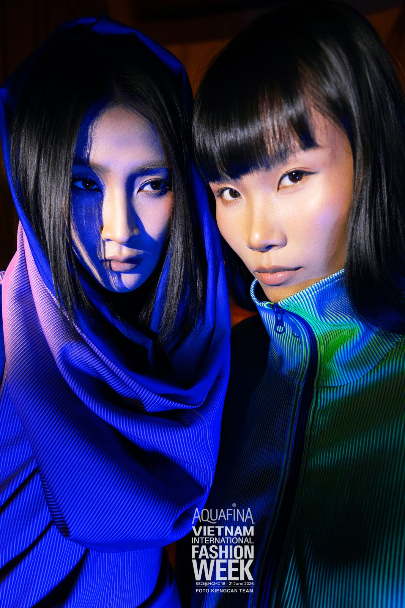

Da nâu không cần trắng hơn — cần đúng tông hơn

Mình có một tình yêu đặc biệt với những làn da nâu. Và cũng vì vậy, mình thấy tiếc mỗi lần gặp một bạn da nâu từng bị đánh nền sáng hơn da thật hai ba tông — mặt một màu, cổ một màu, và vẻ đẹp riêng thì biến mất.
Nguyên tắc của mình: tôn, không sửa
Da nâu có thứ mà da sáng phải dùng bronzer để giả lập: chiều sâu và độ ấm tự nhiên. Việc của lớp nền là giữ đúng tông da thật, làm đều màu và thêm độ căng bóng — không phải đổi màu da.
Điểm ăn tiền của da nâu
Màu đất, đồng, nâu đỏ, gold — những tông này lên da nâu đẹp theo kiểu da sáng không bao giờ có được. Một đường highlight đặt đúng trên da nâu bắt sáng ấm và sang. Đó là lý do những look mình tự hào nhất phần nhiều là trên nền da nâu.
Nếu bạn da nâu và từng ngại makeup vì 'sợ trắng bệch' — hãy để mình đổi trải nghiệm đó. Đúng tông, đúng kỹ thuật, bạn sẽ thấy phiên bản của mình mà bạn chưa từng thấy: vẫn là màu da của bạn, chỉ là lung linh hơn nhiều.
Bạn muốn thử lớp nền này cho tiệc hay ngày cưới của mình? Kể Kay nghe về dịp của bạn — Kay tư vấn look phù hợp trước khi book.
Nhắn Kay trên Instagram